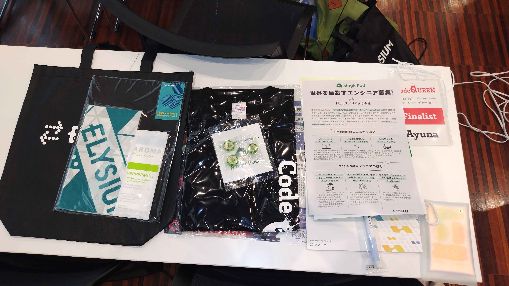
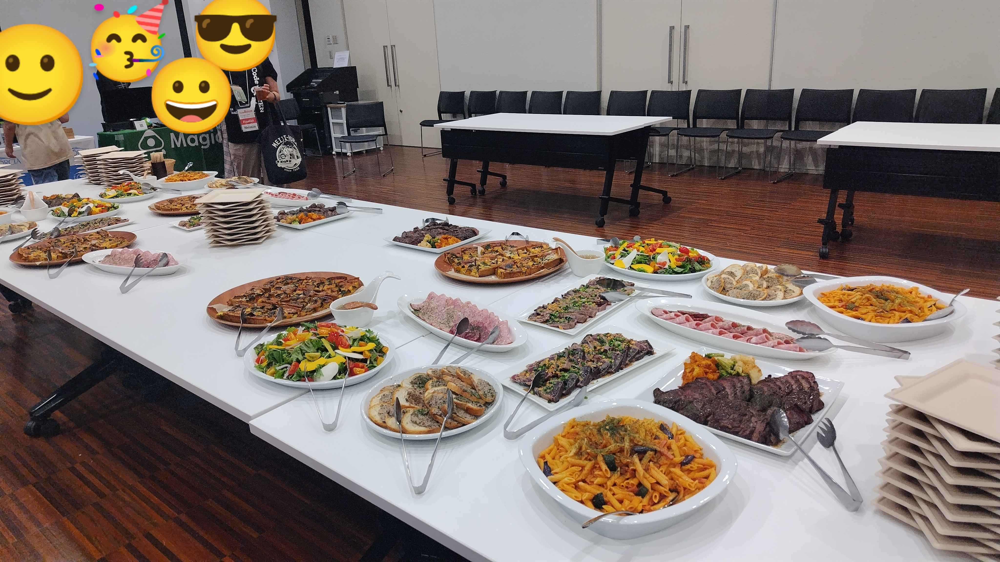

CodeQUEEN2024決勝に出場しました！
目次
はじめに
お久しぶりです。Ayunaです。
みなさんお元気でしたか？私は元気です。
今年こそはと思い早めにCodeQUEENの振り返りをしておくことにします。
冗長な文章がひたすら続きますがそれでもいいよという方はぜひ読んでくださいね。
CodeQUEENの前の話
絶賛水青の境界で約半年停滞中。
4月からICPCに向けて毎日精進をしたけれどレートは伸びないどころか下がる一方。
あれー、今頃レート1800くらいになっているはずだったんだけどなー。
ただ、無意味な精進をしていただとか成長していないだとかでは決してなく、問題の見方が変わっていく時期でした。
冬まではABCでさえ「あーこれは〇〇という典型ですねー」と思うことはなくほぼ全問においてアドホックに解いていたのが、だんだん「この部分がこうだからこういう解き方ができそうですよね」と思えるようになってきました。
その分、「この解法もあるな、あの解き方もできるな」となり頭が混乱して、以前なら考察をして見つけた解法で突っ走りACできるような問題が解けなかったこともありました。
そんな春夏でした。詳しいことはいつか私が入黄できたときに。
2023年は決勝11位でした。予選順位やレート順とほぼ同じ。
C問題がLCAさえ知っていれば一発の問題でしたが、当時の私は水色になりたて。LCAなんか一切頭によぎらず考察とDFSによる実装を頑張りどうにかAC。
D問題の方針は合っていたものの時間が足りずに3完でした。
知識さえあれば、ライブラリさえあれば、早く解けてDに時間を割くことができたという反省から、本戦1週間前からライブラリの整備を始めました。
自力で書いてみたり、人様のライブラリを解読しいつでも窃盗できる体制(？)にしたり…。
1年前はライブラリというものに対してなぜか良い印象を抱いてなかったのですが、今は「便利やん…」となっています。
ICPCの国内予選のときにチームメイトのライブラリを見ることができたのですが、その充実っぷりに感動してモチベ爆上がりでした(それと同時に大学の課題の繁忙期が来たので結局整備はあまり進められてませんが…)。
ところがどっこい、決勝前日に公開された配点を見ると、500点以下がほとんど。
うーん、ABC-likeな問題ばかりになりそうだねえ、絶対LCA要らないねえ。
まあでも今後のことを考えるとライブラリは適切に管理できているならいくらあっても良い！と思いながらお布団に入りました。
決勝当日のおはなし
前回のCodeQUEENのTシャツを着て参戦。
今年もスポンサー企業からたくさんのものをいただきました！！便利なものも入っていて嬉しい。

コンテスト前、お久しぶりな方々が多数なのでとりあえずしゃべりに行く。名刺ももらっちゃう。お友達が増えたのでいっぱいお話ができました。
やっぱり某たかなさんは遠目で見ていても一挙手一投足が面白い。
あんまり会話したことない人に声をかけるのは私にとってはかなり勇気がいることなのですが、それでも強い決心を持って話しかけてもっと仲良くなりたい人々のうちの一人です。
もちろん、ほかの参加者とも仲良くなりたいです。話しかけてくれた方々ありがとう…
ここからは決勝の2時間を振り返ります。問題のリンクはここをクリック
時系列順であって問題順ではありません。
A Welcome to AtCoder Land 2
(0:00:52 AC)
タイピングを頑張る
Pythonは記述量少なくてありがたい
B Decode Time Signal
(0:03:30 AC)
作業を頑張る
Pythonは記述量少なくてありがたい2
FAでした
C Attraction on Rainy Day
(0:08:10 AC)
FAでした2
Kが小さいので二次元DP
DPはC++の方が書きやすい(自分調べ)ので以降C++で実装
D Attend Many Events
(0:31:04 WA)
見た瞬間、うお〜重実装だーとなりました
始点を全探索してダイクストラ法を行い全ての頂点対の最短距離を求め、イベントが起こる順にソートしイベントに参加した回数を持っておくDPっぽい何か。
数ケースだけWAなんだけれどなんでだ〜。多分しょうもないミスをしているのだと思います。
F Divide the Cake
(1:22:39 AC)
Dを一旦諦めてEの方針を考えたものの良さそうなものが出てこないのでFを見ることに。
なるほど数式で表現できそうだと思い、条件を式に書き起こしてこねこね。
setで値を管理して高橋くんがカットする位置を全探索しそれ以外の位置で青木くんが切る場合のスコアの最小値が基準値より大きいとそこで切った場合には勝てないという判定を行うことで解けました。
終了後にFを解いた人の話を聞く限り同じ解法の人はいなさそうでした。
いちごの数を全部N倍した後に平均を引くの賢いですね。というかそっちが一般的らしい。
平均は基本小数になるが小数での処理は避けたいためすべてN倍をし、その後に平均を引くことにより正負のみでの判断に持ち込める。
本日の学びです。さらにはこの問題は答えが-1になることがないらしい。
へー、暖色コーダー(後述)さすがー。
G Quintuple Scoop Ice Cream
(1:45:42 AC)
DEをもう一回見てきたけどやっぱり分からない。Gを見てみたところ貪欲で問題なさそうという直感が生えたので実装。
証明はしっかりとはできていなかったが、アイスの多様性をなるべく保つためにはまだたくさん買えるアイスから買うべき…という感じ。
「隣り合ったアイスは同じ種類ではいけない」という制約を表現するのが難しかったが微バグらせしつつAC。
この問題をACした人数は少なかったようで、コンテスト後の懇親会で某新宿の方の社長さんに「攻めたね〜」みたいなことを言われました。
いや違う、DEが分からなかっただけなんですよー…
E AtCoder Hotel
(終了して20分後AC)
Gを通した時点での凍結済み順位表を見るに私が表彰台に乗るにはおそらくDよりも配点の高いEを解くのが良いだろうと思いチャレンジ。
Dのバグの原因もわからないし！
二次元DPができそうな制約の見た目をしているので紙にちょこちょこ書いてみたら定式化に成功。
あれ、典型だった。でもどこか不思議な書いたことのないDP。
この時点で残り10分。急いで実装したものの間に合わず。
終了した瞬間に一気に集中力がなくなったがなんとか実装を続け、他の参加者との会話を挟みながらなんとかAC。
そしてここで、私が解いた問題がABCFGであることに気づく。EFGの配点が同じとはいえG解いててDE解けないことってあるんだ…
全体的に普段のABC・ARCよりむしろCodeForcesのdiv2あたりに近かったような気がします。
この日に向けてライブラリ整備を進めていたけれどあまり意味がなかった。まあ、いつか使います。
Cを解いた時点で順位は1位だったのが少しずつ落ちてはまた上がって、最終結果は6位。
DEどちらか通せていたら入賞&賞金でした。悔しい。
くやしすぎ pic.twitter.com/ANgpJQC7TV
— Ayuna (@Ayuna_gr) August 3, 2024
懇親会
豪華なお食事が大きなテーブルにずらり…全部美味しかったです！

前回のCodeQUEEN以来の人々とも会話をしました。
前回の決勝を機に、競プロ再開する人が続々現れ、女子部内でのイベントが活発になったような気がします。
やっぱり人は機会さえあれば来るんだなあ。
先輩にも会う
大学のOB・先輩競プロerが別の場所で集まっていたのでそちらに直行。
みんな暖色。私だけ青色。オーラからして強すぎる空間でした。
そして「ABCFGの5完でした」と言うと「どうして」などと言われました。そりゃそう。
その後聞こえてくる赤コーダーの会話は相変わらず分からない。
1年前と比べると黄コーダーの会話がだいぶ分かるようになってきたと思うのだけれど…
レート1600と2000の間は2色分くらいの差がある気がしますね。
赤コーダーはもっともっと遠い。
最後に
会場の手配からスポンサー集め、そして開催と何から何まで準備してくださったkenkooooさんと関係者の方々、本当にありがとうございます！
スポンサーさん、来年こそはたくさん賞金をいただきたいです…お願いします！
残念ながら今回は賞金はもらえませんでしたが、大学生という身分なので懇親会で気軽に会社について知ることができてよかったです。
参加者の中には高校生もいますが、その年齢のときは企業と関わる機会が少ないので、こういうイベントが将来を考えるきっかけになってるといいなあと思います。
私がその年齢だったときはこのような機会はなかったので、ちょっとうらやましい。
そして当日会ったときに知ったのですが、数人の方からひっそりと応援をいただいていたそうです(私は無名の人ですよ)。
その方らも含めてすべての応援してくださる方にも感謝しています。AtCoderのレートやICPCで結果を残せるように頑張ります。
最近はICPCのチームメイトにアルゴリズムの理解が甘い、実装力をもっと上げろなどということで叩き直されていて、本当にありがたい日々を過ごしています。
今は過去回を走ったり解きたいと思った問題の寄せ集めバチャを走ったりしているところを生ぬるい目で見守られています(実際、どういう目されているんだろう？)。
並走して解けなかった問題の解説もしてもらってます。贅沢すぎ！
強い人が身近にいるならそれを利用しない手はないので、こういう機会に時間を決めて集中的にやることにしています。
利用されてくれてありがとう…これからも利用させていただきますのでよろしくね！
これで本当に記事の最後です。
競プロを通じて出会ったみんなに感謝を。
今年も来年も、競プロを通じてたくさんの人と出会い、良い思い出をたくさん作れますように。